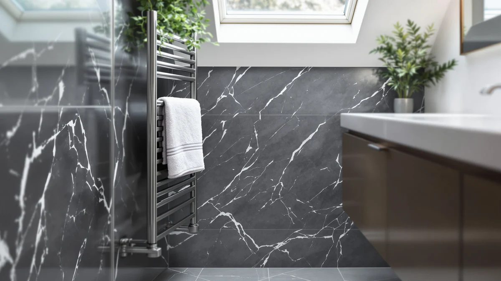

The Best Wall-mounted Towel Warmer Drawers (2026)
Prices and picks verified as of August 2026. Independent, reader-supported reviews.


Quick Answer
The best wall-mounted towel warmer drawers mount to the wall, plug into a standard outlet, and warm a towel while it hangs instead of leaving it cold on a hook. After comparing seven current models on heat output, price, and mounting hardware, we recommend the ENZE Smart Rotating Heated Towel warmer at $189.99 for its motorized rotating bar and built-in shelf.
Our pick: ENZE Smart Rotating Heated Towel — $189.99 Check Price on Amazon
Bottom line: our top pick is the ENZE Smart Rotating Heated Towel Rack for Bathroom at $189.99. The best budget option is the Wall Mounted Towel Warmer Rack at $71.99.
Things to Know Before You Buy
- Wall-mounted towel warmer drawers need a stud or wall anchors rated for the unit's weight, so check your wall type before you buy one with a heavier stainless steel body like the Evokor or KEG.
- Not every model in this guide is a literal drawer. The Keenray Towel Warmer Bucket Luxury sits on a counter or floor instead of the wall, and we include it as the budget alternative for renters who cannot drill into tile.
- Price alone does not predict capacity. The $59.99 LAMATILOVE rack and the $219.00 Evokor both list stainless steel construction, so the gap comes down to size, finish, and smart features rather than material.
- WiFi models like the Aquatrend and KEG add app scheduling, a convenience feature that costs more up front and depends on your home network working the morning you need it.
- For a deeper look at whether a heated towel bar earns its keep, read our breakdown of whether towel warmers are worth it before you commit to any wall-mounted model.
The best wall-mounted towel warmer drawers solve a small, familiar problem: a towel that hangs cold and slightly damp on a hook while you shiver two feet away in a wet bathroom. Bolting a heated rack or drawer-style warmer to the wall frees up floor space in a cramped bathroom and puts a warm towel within reach the moment you step out of the shower. After comparing seven current models on heat output, price, and mounting hardware, the ENZE Smart Rotating Heated Towel warmer at $189.99 stood out as the pick most bathrooms should buy.
This site focuses on one category, so every comparison here is towel warmer against towel warmer, not against a broad mix of home gadgets. Our shortlist covers seven wall-mounted models priced between $59.99 and $219.00, each with a stainless steel body, a listed footprint, and enough owner reviews for real patterns to emerge instead of a single lucky or unlucky buyer. We rechecked pricing and availability on every linked listing before publishing this guide.
The ENZE takes the top spot with a motorized rotating bar that turns towels for even heat and a $189.99 price that undercuts several rivals here. The LAMATILOVE Wall Mounted Towel Warmer Rack is the runner-up at $59.99 for anyone who wants a simpler bar rack without electronics. The remaining five picks split into a compact COSTWAY bar, a bucket-style Keenray for people who want warmth without drilling into tile, and three WiFi or timer-equipped racks from Aquatrend, Evokor, and KEG for bathrooms that want scheduling built in.
Why You Should Trust Us
I'm Ilane Tall, and I cover home and bath products for Best Towel Warmers. This site sticks to one category, which means we measure every wall-mounted towel warmer drawer against direct rivals in the same price range and format, not against unrelated bathroom gadgets. We pull specs, prices, and images straight from the Amazon listings linked in this guide, cross-check them against manufacturer pages, and confirm each product is in stock before publishing. No brand pays for a spot on this list, and none previews our rankings before readers do. When a pick develops a pattern of complaints in owner reviews, we drop it and explain the swap in The Competition section below.
How We Picked
We started with the full lineup of towel warmers and heated racks we track and filtered for units built to mount on a wall rather than stand on the floor, since that single requirement rules out most bucket-style warmers on the market. From the wall-mounted field, we kept only listings with a clear price, a stainless steel or comparable rustproof body, and enough owner reviews to judge real-world reliability. We also folded in one bucket-style exception, the Keenray, because its price and reviews earned it a spot as the budget pick for readers who cannot mount hardware to their wall. Seven products survived every filter, spanning $59.99 to $219.00, and each one appears in the comparison table and product breakdowns below.
How We Compared
We compared the seven finalists side by side on the specs that actually change how a wall-mounted towel warmer performs day to day: listed dimensions, stated material, mounting style, and any smart features like WiFi control or a built-in timer. We read through recent owner reviews on each Amazon listing looking for repeat complaints, such as a rack that arrives with damaged brackets or a timer that drifts, rather than one-off comments. We also compared each unit's price against its feature set within this guide, so a $219.00 pick like the Evokor has to justify its premium with something the $59.99 LAMATILOVE rack does not offer. Products that only matched on price without matching on features or reliability dropped out of contention.
Our Picks

ENZE Smart Rotating Heated Towel
What we like
- Motorized rotating bar turns towels for even heat across the whole rack
- 17.7 x 26.8 inch frame with a shelf adds storage beyond the bars themselves
- Stainless steel body resists the rust that develops in a humid bathroom
Flaws but not dealbreakers
- $189.99 makes it the second-most expensive pick in this guide
- The added shelf and motor make this a bigger install than a simple bar rack
| Material | Stainless steel |
| Size | 17.7" x 26.8" (With Shelf) |
The ENZE Smart Rotating Heated Towel warmer earns the top spot in this guide because it does more than warm a towel. Its motorized bar rotates while it heats, so a towel draped over one side reaches the same temperature as one hung on the opposite bar instead of leaving a cold spot where the fabric doubled over. The frame measures 17.7 by 26.8 inches with a shelf built into the design, so you get a spot for folded washcloths or a bottle of lotion alongside the warming bars themselves, a detail none of the simpler bar racks here match.
At $189.99, the ENZE costs more than four of the other six picks, and the motor and shelf mean a slightly more involved wall mount than a bare bar rack. Neither drawback changes the recommendation. For a household sharing one bathroom, the extra width and the rotating heat spread more evenly across two or three towels at once, which is the exact problem a wall-mounted towel warmer drawer is supposed to solve. If you want the simplest possible install instead, the LAMATILOVE runner-up below costs $130 less.

Wall Mounted Towel Warmer Rack
What we like
- Cheapest pick in this guide at $59.99
- Stainless steel bars resist rust in a steamy bathroom
- Straightforward bar design mounts without a shelf or motor to align
Flaws but not dealbreakers
- No listed smart features or timer, so you turn it on and off manually
- Fewer bars than the ENZE means less total drying surface
| Material | Stainless steel |
| Size | — |
The LAMATILOVE Wall Mounted Towel Warmer Rack is our runner-up because it strips the category down to what most people actually need: a stainless steel bar rack that mounts to the wall, heats up, and warms a towel without a companion app or a shelf to plan around. At $59.99 it costs less than any other pick here, which matters if you are outfitting more than one bathroom or trying a heated rack for the first time before committing to a pricier model.
The tradeoff is a shorter feature list. There is no timer to schedule ahead and no WiFi to check from another room, so you flip it on the way you would a light switch. The simplicity is also the appeal: fewer parts means less that can fail, and the stainless steel construction matches the pricier picks in this guide despite the gap in cost. Choose the LAMATILOVE when you want the wall-mounted towel warmer drawers experience without paying for extras you will not use.

COSTWAY Towel Warmer for Bathroom
What we like
- Compact 13 x 18.5 inch footprint suits a small or half bathroom
- Stainless steel body holds up to daily steam and humidity
- Mid-range $89.99 price sits well below the priciest picks here
Flaws but not dealbreakers
- Smaller footprint holds fewer towels than the larger Evokor or ENZE
- No smart features or app control at this price point
| Material | Stainless steel |
| Size | 13" x 18.5" |
The COSTWAY Towel Warmer for Bathroom fits where the bigger picks in this guide cannot. Its 13 by 18.5 inch frame mounts in the narrow wall strip next to a pedestal sink or inside a small guest bathroom, and the stainless steel construction handles the humidity that comes with daily showers without the rust spots that plague cheaper metal finishes.
At $89.99, the COSTWAY sits in the middle of this lineup on price, and the smaller frame is the reason. You trade drying surface for a footprint that clears a tight wall, so a household with two or three people showering back to back may want the wider ENZE or Evokor instead. For anyone shopping specifically for wall-mounted towel warmer drawers to fit a small bathroom, the COSTWAY's size is the whole pitch.

Keenray Towel Warmer Bucket Luxury
What we like
- No drilling or wall mounting required, set it down and plug it in
- Large capacity holds more than a single towel at once
- Stainless steel construction at a $79.99 price
Flaws but not dealbreakers
- Sits on the floor or counter instead of the wall, so it takes up usable space
- Not a true wall-mounted drawer despite fitting this guide's budget slot
| Material | Stainless steel |
| Size | Large |
The Keenray Towel Warmer Bucket Luxury is the one exception in this guide: it does not mount to the wall at all. We include it as the budget pick because plenty of readers researching wall-mounted towel warmer drawers are looking for a way to skip drilling into tile, especially in a rental. The Keenray's large bucket-style body sits on the floor or a counter, plugs into a standard outlet, and heats towels the same way a wall rack does, minus the mounting bracket.
At $79.99, it undercuts every wall-mounted pick except the LAMATILOVE, and the large interior fits more than the slim wall racks in this guide manage. The compromise is floor or counter space, which matters in a bathroom where every square foot already has a job. If your wall can take a bracket, the mounted picks above free up that space. If it cannot, or you rent and cannot alter the wall, the Keenray solves the same cold-towel problem without a single screw.

Aquatrend WiFi Heated Towel Rack
What we like
- WiFi app control lets you schedule or trigger heating remotely
- Stainless steel bars built for a humid bathroom environment
- Sits mid-pack on price at $159.99 among the smart-enabled picks
Flaws but not dealbreakers
- App dependency means a WiFi outage leaves you using the manual controls
- Costs $100 more than the manual LAMATILOVE rack
| Material | Stainless steel |
| Size | — |
The Aquatrend WiFi Heated Towel Rack adds the one feature the LAMATILOVE and COSTWAY skip entirely: remote control. Pair it with the companion app and you can start it from the kitchen or set a recurring schedule so towels are warm before you finish your shower, rather than turning the rack on and waiting the way you do with a manual model.
At $159.99, the Aquatrend costs roughly $100 more than the base LAMATILOVE rack, and that premium buys the WiFi connectivity and whatever scheduling flexibility comes with it. The catch is dependency: if your bathroom WiFi signal drops or you never install the app, you end up with a stainless steel rack that works fine on manual controls but does not deliver the feature you paid extra for. Buy the Aquatrend specifically for the app, not as a general upgrade over the cheaper picks in this guide.

Evokor Towel Warmer with Timer
What we like
- Largest footprint in this guide at 35.4 x 18.11 inches
- Built-in timer schedules heating without an app or WiFi dependency
- Stainless steel body suited to daily use in a shared bathroom
Flaws but not dealbreakers
- Highest price in this guide at $219.00
- Large frame needs more open wall space than the compact COSTWAY
| Material | Stainless steel |
| Size | 35.4" × 18.11" |
The Evokor Towel Warmer with Timer targets a bathroom where more than one towel needs warming at once. At 35.4 by 18.11 inches, it claims the largest footprint of any wall-mounted unit in this lineup, wide enough for two or three towels to hang without doubling over each other and losing heat at the fold.
Its built-in timer schedules heating cycles on its own without needing an app or a home network, which appeals to anyone who wants convenience without adding another device to their WiFi. That size and feature set come at a cost: $219.00 makes the Evokor the most expensive pick here, and the larger frame needs a wider stretch of open wall than the compact COSTWAY or the LAMATILOVE. For a household that showers back to back and keeps running out of warm towel space, the Evokor solves that specific problem better than anything smaller in this guide.

KEG Smart WiFi Towel Warmer
What we like
- WiFi version adds app control at a lower price than the Aquatrend
- Stainless steel build matches the rest of this guide's durability
- $129.99 price undercuts the other smart-enabled picks here
Flaws but not dealbreakers
- Cheaper WiFi implementation than the Aquatrend, so features are more basic
- Still costs more than double the manual LAMATILOVE rack
| Material | Stainless steel |
| Size | Wifi Version |
The KEG Smart WiFi Towel Warmer splits the difference between the manual racks in this guide and the pricier Aquatrend. It runs the same WiFi app control, letting you trigger heating from your phone, but at $129.99 it undercuts the Aquatrend by $30 while still beating the fully manual picks on convenience.
The app on the KEG covers the basics, on, off, and scheduling, without the extra polish you get from the pricier Aquatrend, and the stainless steel construction holds up the same way it does across every pick in this guide. If WiFi control matters to you but $159.99 feels like too much for it, the KEG gets you there for $30 less. If app control does not matter to you at all, the LAMATILOVE below still costs less than half as much.
Quick Comparison
| Product | Material | Price | Rating | Best for | Get it |
|---|---|---|---|---|---|
| ENZE Smart Rotating Heated Towel | Stainless steel | $189.99 | 4 | Top wall-mounted pick, even heat plus shelf | View on Amazon → |
| Wall Mounted Towel Warmer Rack | Stainless steel | $59.99 | 4 | Lowest price, simplest install | View on Amazon → |
| COSTWAY Towel Warmer for Bathroom | Stainless steel | $89.99 | 4 | Small bathrooms, tight wall space | View on Amazon → |
| Keenray Towel Warmer Bucket Luxury | Stainless steel | $79.99 | 4 | No mounting hardware needed | View on Amazon → |
| Aquatrend WiFi Heated Towel Rack | Stainless steel | $159.99 | 4 | App scheduling, remote start | View on Amazon → |
| Evokor Towel Warmer with Timer | Stainless steel | $219.00 | 4 | Largest capacity, built-in timer | View on Amazon → |
| KEG Smart WiFi Towel Warmer | Stainless steel | $129.99 | 4 | WiFi control at a lower price | View on Amazon → |
Do wall-mounted towel warmer drawers need an electrician to install?
No, none of the seven picks in this guide need hardwiring.
Is a wall-mounted towel warmer drawer actually a drawer?
Most are not drawers in the cabinetry sense.
The Competition
Search Amazon for wall-mounted towel warmer drawers and you will find results that do not belong in this guide at all. Freestanding buckets and cabinet-style warmers show up in the same search results because they solve the same cold-towel problem, but they sit on the floor or a counter instead of a wall, so we cover that format separately in our freestanding towel warmer drawers guide. We made one exception for the Keenray in this list because its price and bucket design earned it the budget slot, and we say so plainly rather than pretending it mounts to a wall.
We also passed over hardwired units that need an electrician and a permanent circuit connection. Those belong in a different buying decision entirely, one we cover in our hardwired towel warmer drawers guide, since the installation cost and commitment change the math compared to a plug-in wall rack you can move later. Premium cabinet-style warmers with higher price tags also sit outside this list; readers chasing that tier should start with our luxury towel warmer drawers guide instead.
None of these alternate formats changed the ranking among true wall-mounted options. For most bathrooms, the best wall-mounted towel warmer drawers purchase remains the ENZE Smart Rotating Heated Towel warmer at $189.99. Its rotating bar and shelf beat every other wall-mounted pick in this guide on everyday usefulness.